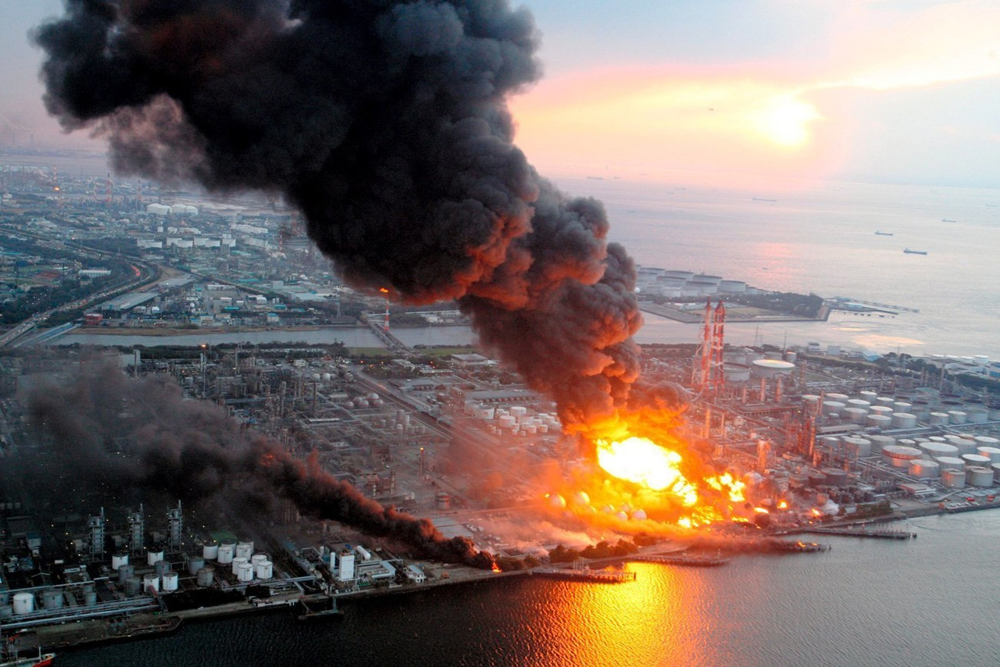
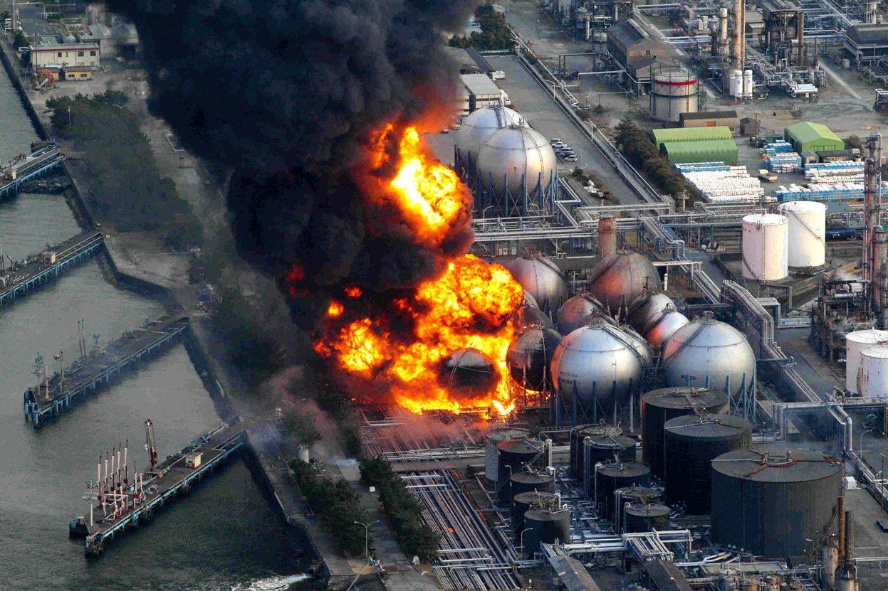

Авария на Фукусиме-1
В 2011 году, на территории Японии, в городе Фукусима, произошла, в результате сильнейшего землятрясения, произошла аварии на АЭС Фукусима-1.
Ход событий
11 марта 2011 года произошло сильное землетрясение с магнитудой 9 баллов у побережья Японии, что привело к цунами высотой до 15 метров.
Цунами разрушило защитные стены и затопило реакторы атомной электростанции Фукусима-1.
Из-за отключения электропитания не сработали системы охлаждения реакторов, что привело к перегреву и аварии.
В результате выхода за пределы радиационного контроля была объявлена ядерная авария масштаба седьмого уровня, самого высокого.
Была проведена эвакуация населения в радиусе 20 км от электростанции.
После аварии в течение месяцев продолжались утечки радиации и усилия по локализации ситуации, включая заливание реакторов водой и другие меры.
Причины
- мощное землетрясения и цунами, которое привело к нарушению систем охлаждения ядерного реактора, возникновению расплавленного ядерного топлива;
- недостатки в проектировании и эксплуатации реактора;
- недостаточные меры предосторожности со стороны компании-оператора.
Последствия
Территория вокруг станции до сих пор остается невероятно загрязненной, меры по снижению не предпринимаются. Большая часть населения была эвакуирована. Начались тщательные проверки в области ядерной энергетики.